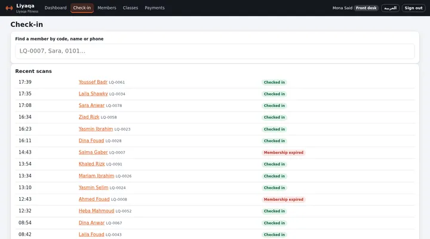
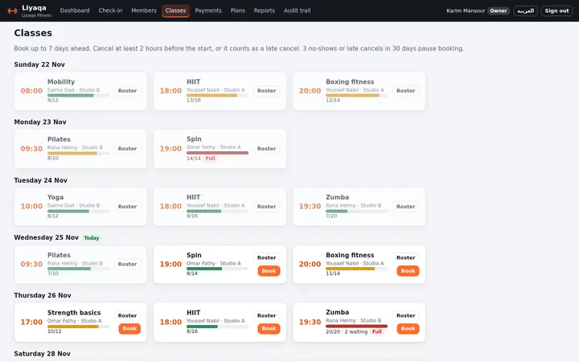
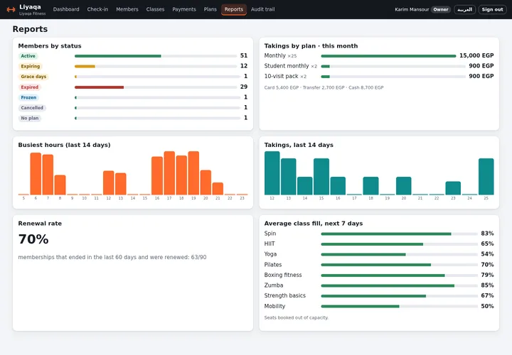
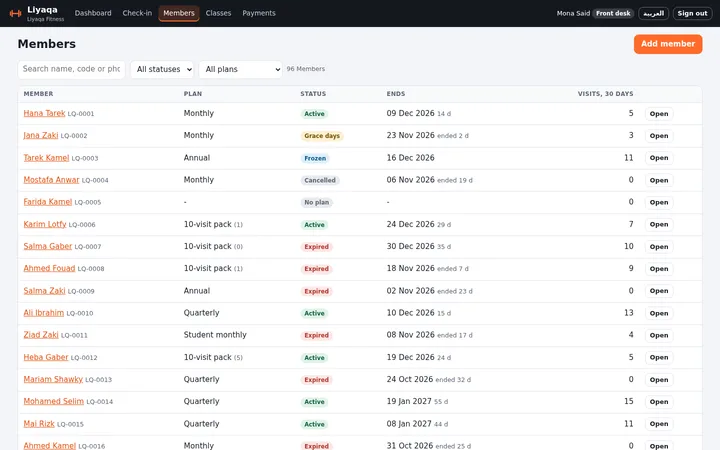
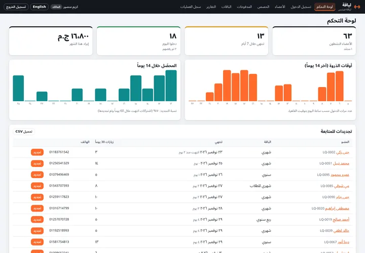
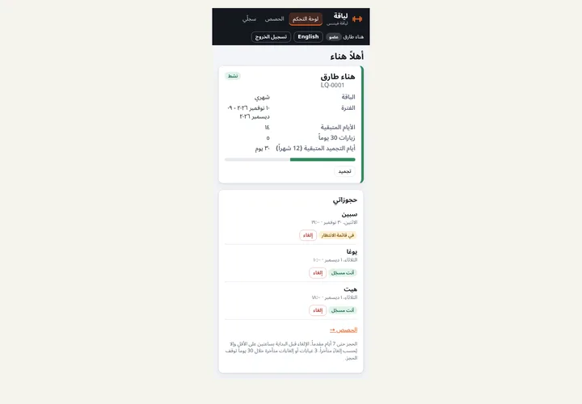

PORTFOLIO DEMO / BUILT / LIVE DEMO
Liyaqa
The front desk, the classes and the renewals, in one place.
 ACTUAL BUILD
ACTUAL BUILDLiyaqa · Owner dashboard. Fictional gym and demo data.
The problem
A small gym often runs on a paper sign-in sheet, a notebook of expiry dates and a WhatsApp group. The front desk cannot tell at the door whether a card is still valid. Nobody knows who is about to expire until they stop coming. Class spots are first come, first served, and a no-show costs someone else a place.
What was built
A membership system with four roles. The front desk looks a member up by name, code or phone and gets a clear decision: let in, let in with a warning (a two-day grace period), or turned away with the reason, such as expired, frozen, cancelled, no plan or no visits left. A second scan within two hours is not counted again. Plans are monthly, quarterly, annual, student and a 10-visit pack. Renewing early stacks after the current end date, households get a discount, and every payment gets a numbered receipt. Members can freeze for 7 to 30 days, up to 30 days a year. Classes can be booked a week ahead with a waitlist that promotes automatically, and repeated late cancels or no-shows pause booking. Trainers mark attendance for their own classes. The owner sees busiest hours, takings, members by status, renewal rate, class fill, a list of renewals to chase and a list of lapsed members to win back. Everything is Arabic right-to-left or English, and members get their own portal.
What changes for the gym
Before. The desk checks a paper sheet and guesses. Expiry dates live in a notebook. Renewal calls happen when someone remembers. Full classes turn into arguments, and no-shows are free.
After. The desk gets a yes, a warning or a no with the reason in one scan. The renewal list and the win-back list put the phone numbers in front of staff every morning. Classes have a limit, a waitlist and a fair cancel rule. The owner can see peak hours, takings and renewal rate without building a spreadsheet.
Why it matters to a gym owner
Most lost revenue in a small gym is quiet: a member lets a plan lapse and nobody calls, a free pass is given by mistake, a popular class sits half empty because the waitlist is a notebook. This system turns those into lists and rules, so the owner spends time on the people who are about to leave instead of finding out afterwards. These are the situations the demo is built to show. They are not measured results from a real gym.
The approach
No framework: plain JavaScript pages, one serverless API function and one logic file that holds every rule (grace days, double-scan window, visit packs, stacking, household discount, freeze limits, waitlist promotion, strikes, who may see what). The same file runs in the API, the browser and the tests. Permissions are enforced on the server: the front desk cannot change prices or void payments, a trainer sees only their own classes, and a member only receives their own record. Dates in the seed data are relative to now, so the demo always looks current.
The result
A live demo anyone can open. Sign in as owner (PIN 1111), front desk (2222), trainer (3333) or member (4444); the PINs are on the sign-in screen. The sample gym has 96 members, about 210 payments, about 690 check-ins and about 370 class bookings. Verification: 20 business-rule tests and 96 browser and API checks run against the live site, covering every role, permission limits, the desk decisions, billing and receipts, freezes, booking and waitlist, Arabic RTL, a phone layout and hostile text shown as plain text.
Evidence & production limits
One shared demo workspace: everyone sees and changes the same data. State is kept in server memory only, so it resets about every six hours and whenever the server instance restarts. Sign-in is a PIN printed on the sign-in screen, so it must not hold real member data. The gym, members, prices and people are fictional. Payments are recorded by staff, not processed: there is no online payment, and receipts are internal numbers, not tax invoices.
Known gaps: no database, no real authentication or password reset, no SMS, WhatsApp or email reminders, no turnstile or card-reader hardware, one gym and one time zone. The hosting account's Blob storage quota was suspended at the time of writing, which is why the demo uses memory. Direction, scope and delivery: Nada Gamal.
Next chapter
Real accounts with hashed passwords, a proper database, online payment, WhatsApp reminders for renewals and class changes, tax-compliant receipts and a card or QR reader at the desk would be the next implementation steps.
Inside the build
Open any preview to see the full capture. Captures show test or demonstration content. All records shown are demonstration content, not evidence of client use.





